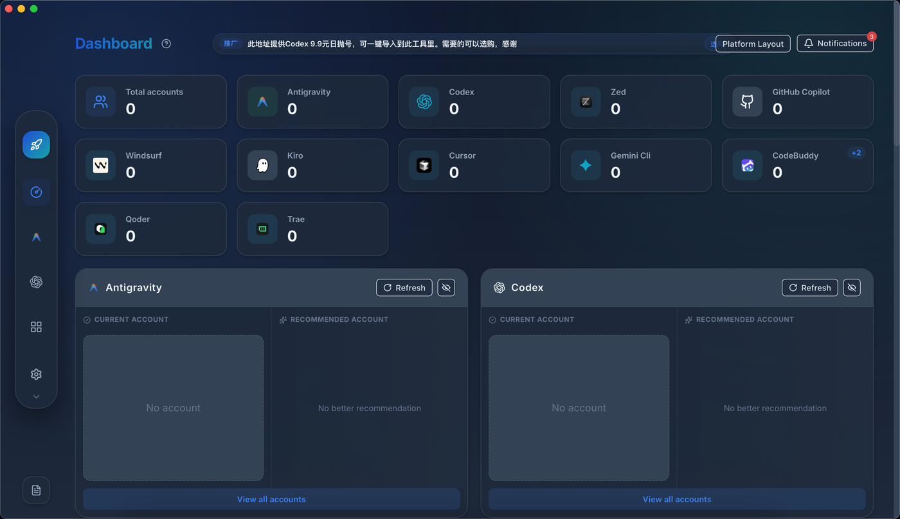
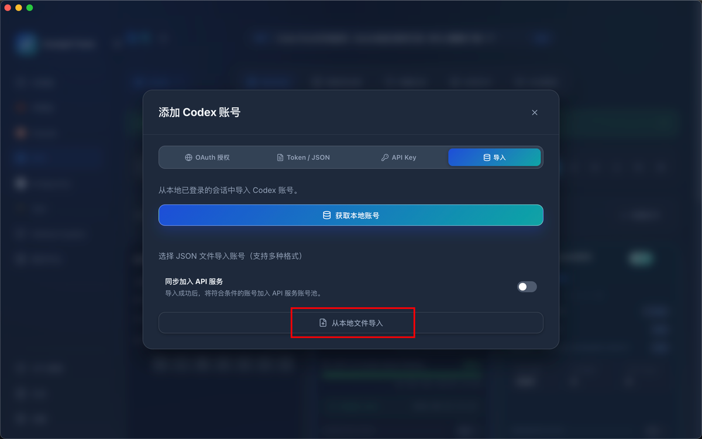
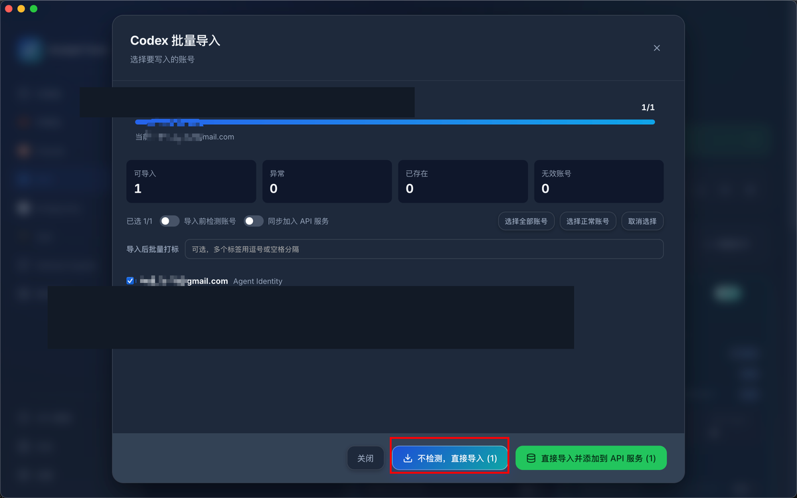
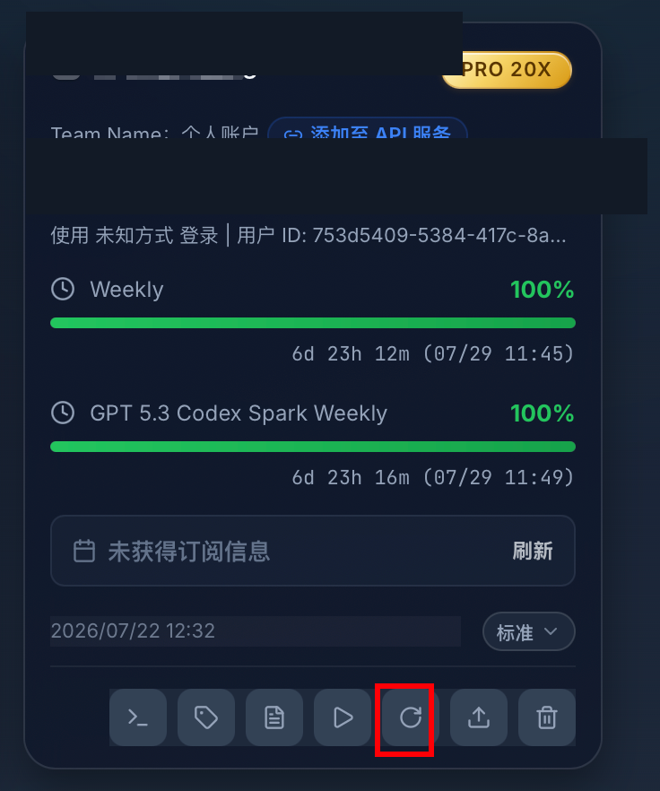

无需验证码 / 免短信 · 纯前端生成 auth.json · 导入 Cockpit 启动 Codex
auth.openai.com。
accessToken 等同密码，勿发到公开渠道。仅限自有账号，请遵守 OpenAI 服务条款。
在浏览器中登录你的 ChatGPT 账号（保持登录状态）。
已登录可直接进入下一步。
打开下面链接，复制整页 JSON（或只复制 accessToken 字段）。
https://chatgpt.com/api/auth/session
打开 Session 页
{ 开头的 JSON；全选复制即可。把上一步复制的内容粘贴到下方，点击生成。密钥在本地生成，token 只发给 OpenAI 注册 agent。
生成成功后，请下载文件，继续第 4 步用 Cockpit 导入并启动 Codex。
下载 Cockpit → 导入刚生成的 auth.json → 刷新 → 一键进入 Codex。
打开 Releases 页，按系统下载安装（macOS 一般选 .dmg，Windows 选 .msi）。

在「添加 Codex 账号」弹窗中，选择顶部的 导入 标签页。

点击 从本地文件导入，选择第 3 步下载的 auth.json。解析成功后会显示 Agent Identity 账号，再点 不检测，直接导入。

导入成功后，在账号卡片底部工具栏点击 刷新（圆形箭头图标），拉取额度与订阅状态。

刷新完成后，点击工具栏中的 播放 / 开始 按钮，即可用该 Agent Identity 账号直接启动 Codex，无需再浏览器 OAuth / 接码。
auth.json 含私钥，请勿上传到公开仓库或发给陌生人。auth_mode: agent_identity 格式，且 Cockpit 版本支持 Agent Identity。~/.codex/auth.json 后运行 codex。
有效 Session JWT → 本地 Ed25519 密钥对 →
POST auth.openai.com/api/accounts/v1/agent/register →
写出 auth_mode: agent_identity。
免的是 Codex OAuth 登录接码，不是「白号免短信注册」。